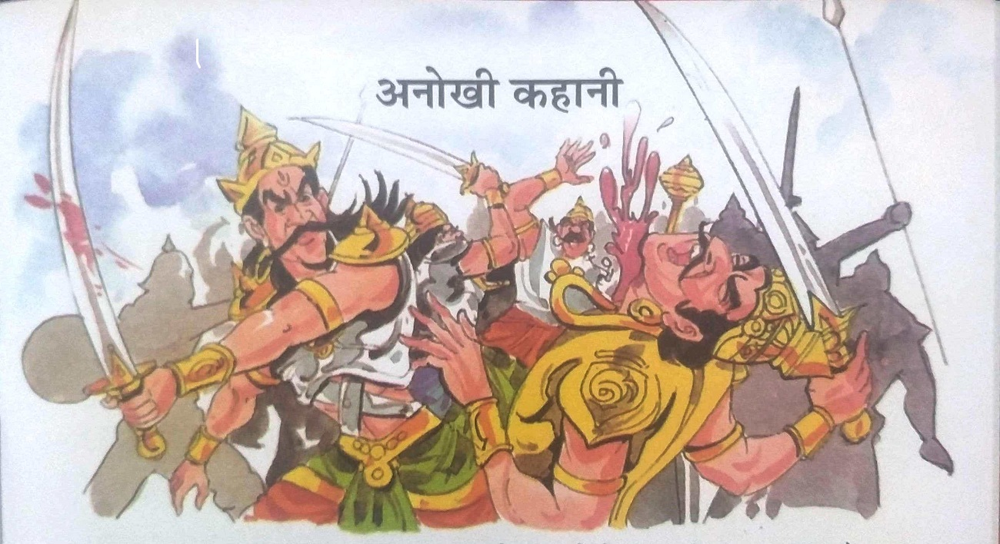
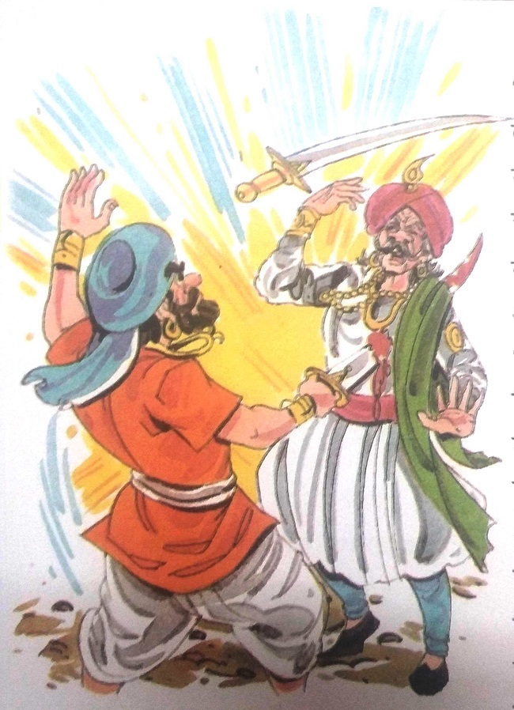
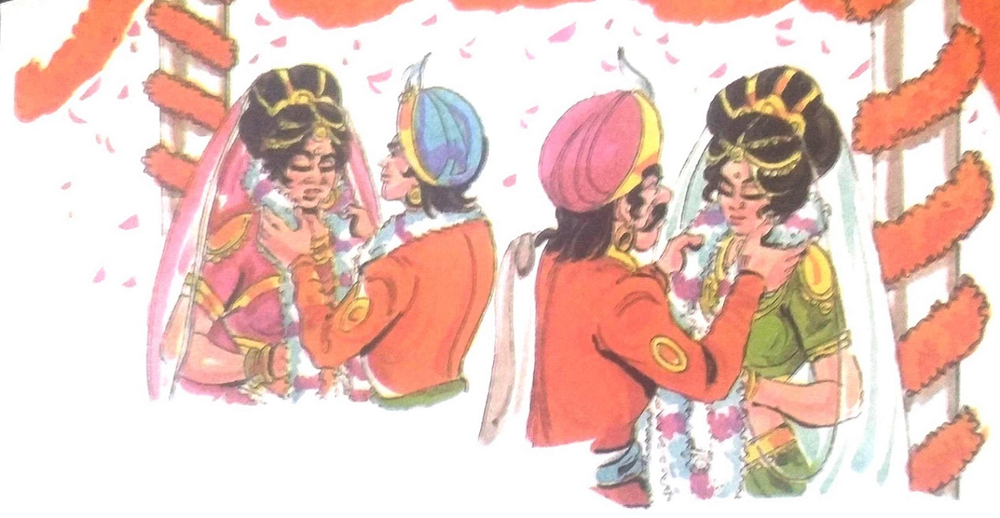
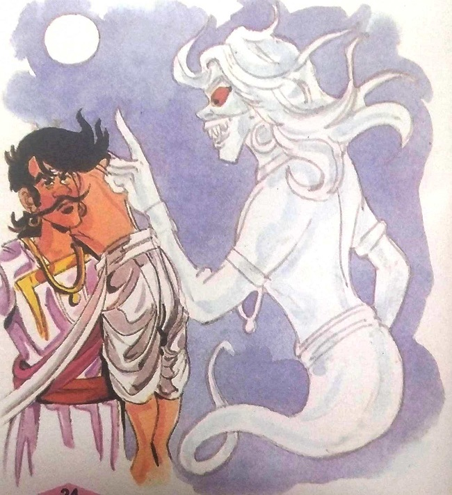

૨૧-અનન્ય વાર્તા

રાજા વિક્રમાદિત્ય મૃતદેહને નીચે લાવવા માટે ફરી એકવાર ઝાડ પર ચઢ્યા અને તેને ખભા પર
લઈને ચાલ્યા ગયા. વેતાલાએ ફરી એકવાર વાર્તા કહેવાનું શરૂ કર્યું-
તે લાંબા સમય પહેલા થયું હતું. રાજા ધરમરાજ દક્ષિણપથ નામના રાજ્ય પર શાસન કરતા હતા.
તેના લગ્ન માલવાની રાજકુમારી સાથે થયા હતા. તેમને એક પુત્રી લાવણ્યાવતી હતી. રાજા ધરમરાજના સંબંધીઓ
તેમની ઈર્ષ્યા કરતા હતા. તેમના સંબંધીઓ વારંવાર તેમની વિરુદ્ધ ષડયંત્ર રચતા હતા, જેના કારણે રાજા
ધર્મરાજ પરેશાન રહેતા હતા. સમય જતાં, રાજકુમારી લાવણ્યાવતી લગ્ન માટે લાયક બની. રાજા તેના માટે
યોગ્ય વર શોધી રહ્યો હતો, પરંતુ ભાગ્ય પાસે કંઈક બીજું હતું. રાજાના સંબંધીઓએ કાવતરું રચીને રાજ્ય
કબજે કર્યું અને રાજા તેની પત્ની અને પુત્રી સાથે પોતાનો જીવ બચાવવા ભાગી ગયો. મહેલ છોડતા પહેલા તે
પોતાની સાથે કિંમતી રત્નો અને પૈસા પણ લઈ ગયો હતો.
|

|
ચાલતાં ચાલતાં તેઓ એક જંગલમાંથી બીજા જંગલમાં પહોંચ્યા. એ ત્રણેય બહુ
થાકેલા હતા. પણ
તેણે પોતાનો પ્રવાસ ચાલુ રાખ્યો. ચાલતી વખતે તેઓ ભીલોની વસાહતમાંથી પસાર થયા. ભીલો
સ્વભાવે હિંસક
અને લૂંટારા હતા. જ્યારે તેની નજર શાહી પરિવાર પર પડી તો તેણે તેમના પર હુમલો
કર્યો. રાજાએ ભીલો
સામે લડવાનું શરૂ કર્યું. તેણે તેની પત્ની અને પુત્રીને કહ્યું, "તમે બે ભાગી જાઓ.
હું તેમની સાથે
વ્યવહાર કરીશ." રાણી અને રાજકુમારી જંગલમાં આગળ વધ્યા અને રાજાએ ભીલોનો બહાદુરીથી
સામનો કર્યો,
પરંતુ તેઓ ભીલોની સામે લાંબો સમય ટકી શક્યા નહીં. ભીલોએ તેમને મારી નાખ્યા અને
તેમની સંપત્તિ અને
રત્નો છીનવી લીધા.
ચાલતા ચાલતા રાણી અને રાજકુમારી એક નાની નદી પાસે પહોંચ્યા. થોડીવાર
ત્યાં રોકાયા પછી
તે આગળ વધ્યો. તે જ સમયે રાજા ચંદ્ર સિંહ અને તેમના પુત્ર રાજકુમાર સિંહ પરાક્રમ
શિકાર માટે તે જ
જંગલમાં આવ્યા હતા. જ્યારે તેઓએ નદી પાસે પગના નિશાન જોયા ત્યારે તેઓ અટકી ગયા.
પગના નિશાનની એક
જોડી નાની હતી અને બીજી જોડીમાં મોટા પગના નિશાન હતા. તેઓએ પગના નિશાનને અનુસરવાનું
નક્કી કર્યું.
રાજકુમારે તેના પિતાને કહ્યું, "પિતા! મેં થોડા સમય પહેલા મારી માતાને ગુમાવી દીધી
છે. તમે પણ એકલતા
અનુભવતા હશો. હું વિચારી રહ્યો છું કે જો આપણે બે સ્ત્રીઓને શોધીશું, તો હું ટૂંકા
પગવાળી સ્ત્રી
સાથે લગ્ન કરીશ અને તમે મોટા પગવાળી સ્ત્રી સાથે લગ્ન કરી લો. કારણ કે મને લાગે છે
કે નાના પગવાળી
સ્ત્રી ઉંમરમાં પણ નાની હશે.હવે તમે મને વચન આપો કે તમે મોટા પગવાળી સ્ત્રી સાથે
ચોક્કસ લગ્ન કરશો.
આ રીતે આપણને બંનેને અમારા જીવનસાથી પણ મળી જશે.”
|

“દીકરા! તમારી ઈચ્છા પ્રમાણે,” રાજાએ કહ્યું.બંને જંગલ તરફ આગળ વધ્યા. થોડે દૂર ગયા પછી
તેઓને રાણી અને રાજકુમારી બંને મળ્યા. તે તેમની પાસે ગયો અને પૂછ્યું, "તમે બંને અહીં શું કરો છો?"
બંનેએ તેને આખી વાત કહી. પછી તેણે રાજા અને રાજકુમારનો પરિચય પૂછ્યો. રાજાએ પોતાનો અને
રાજકુમારનો પરિચય કરાવ્યો અને તેમને મહેલમાં જવાની ઓફર કરી. રાણી અને રાજકુમારીએ તેમનો પ્રસ્તાવ
સ્વીકારી લીધો અને મહેલમાં આવ્યા. આશ્ચર્યની વાત એ હતી કે રાણીના પગ નાના હતા અને રાજકુમારીના પગ
મોટા હતા. રાજા અને રાજકુમાર બંને આશ્ચર્યચકિત થઈ ગયા. પરંતુ બંને પોતપોતાના વચનોથી બંધાયેલા હતા,
તેથી રાજા ચંદ્રસિંહે રાજકુમારી સાથે લગ્ન કર્યા અને રાજકુમારે રાણી સાથે લગ્ન કર્યા. આમ હવે
રાજકુમારી લાવણ્યાવતી પોતાની માતાની સાસુ બની ગઈ હતી. સમય જતાં તેઓને બાળકો થયાં.
|

|
વેતાલે વાર્તા પૂરી કરી અને ધીમા અવાજે કહ્યું, "રાજન! હવે તમે જ કહો
કે બાળકો એકબીજાને
શું કહેશે?
તેમની વચ્ચે શું સંબંધ હશે? સાચો જવાબ જાણવા છતાં તમે મારા પ્રશ્નનો ખોટો જવાબ આપો
તો. પછી. હું
તમારા માથાના ટુકડા કરી દઈશ. હવે મારા પ્રશ્નોના જવાબ આપો.'
રાજા વિક્રમાદિત્ય વિચારમાં ખોવાઈ ગયો. પણ ઘણું વિચાર્યા પછી પણ તે કોઈ
જવાબ આપી શક્યો
નહિ. તેઓ
વેતાળ સાથે ચુપચાપ ચાલતા હતા. રાજાને ઊંડા વિચારમાં ડૂબેલો જોઈ વેતાલા સમજી ગયો કે
રાજાને જવાબ ખબર
નથી. તેણે મનમાં કહ્યું, 'હવે તે સાધુને પાઠ ભણાવવાનો સમય આવી ગયો છે. હું આ
બુદ્ધિશાળી અને ન્યાયી
રાજાને જાદુઈ શક્તિઓ આપીશ. હું મારી શક્તિઓ એ સાધુના હાથમાં જવા નહીં દઉં.
પછી વેતાલા બોલ્યા. "રાજા, તમે ખૂબ ધૈર્ય અને હિંમત બતાવી છે. તમે
તમારા માર્ગમાંથી
સહેજ પણ ભટકી
ગયા નથી. આ માટે તમે પુરસ્કારના હકદાર છો. હવે હું આ મૃતદેહ છોડી રહ્યો છું. તમે
તેને ઋષિ પાસે લઈ
જાઓ. જાઓ. પણ હું જાઉં તે પહેલાં. , હું તમને કંઈક કહેવા માંગુ છું. ધ્યાનથી સાંભળો
- તમે જેની મદદ
માટે મૃતદેહ લઈ રહ્યા છો તે સાધુ એક દુષ્ટ વ્યક્તિ છે. તે આજે વિધિ પૂર્ણ કરવા માટે
મને મૃતદેહના
શરીરમાં બોલાવશે. પછી તે તમને બલિદાન આપશે. ધાર્મિક વિધિ પૂર્ણ કરો. તે તમને નમન
કરવાનું કહેશે.
જ્યારે તે તમને આવું કરવા માટે કહે છે, ત્યારે તમે તેને પ્રથમ નમીને તમને બતાવવાનું
કહો. તે તમને
કહેવા માટે નીચે ઝૂકે છે કે તરત જ તમે શિરચ્છેદ કરો."
એમ કહીને વેતાલ મૃતદેહ છોડીને ચાલ્યો ગયો. રાજા વિક્રમાદિત્ય મૃતદેહ લઈને નીકળ્યા.
|
|